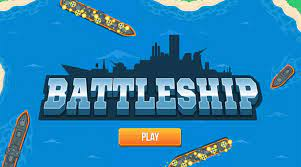

Education:
University of Jeddah, Software Engineering Department
2020-Present

King Abdulaziz University, Prepatory Year
2018-2019

Prince Sultan Highschool, Scientific Path
2016-2018
Software Engineer
University of Jeddah, Software Engineering Department
2020-Present
King Abdulaziz University, Prepatory Year
2018-2019
Prince Sultan Highschool, Scientific Path
2016-2018
Mobile Application - Visual Note (Example Information)
2020
(Example Information) I designed and implemented an iOS mobile application called Visual Note. The idea behind the app is to allow the users to take notes with pictures. For example, if a user saw a poster, he/she could simply take a picture of the poster using the app, and save it as a visual note which they can name and categorize. Moreover, they can add a text side note to their visual note, and set a reminder as well. The application allows the users to quickly and easily find their saved visual notes through the name or the category. The whole application was built using objective-c and coredata.
Web-based Game - Battleship(Example Information)
2021
(Example Information) I designed and built a web based multiplayer game called battleship. The game was built using PHP for the back-end. HTML, CSS, JavaScript, jQuery for the front-end. The communication between the front-end and the back-end was done through AJAX as a web-service calls. The database used was MySQL, and proper encryption along side best security practices were implemented throughout the project. The web-based game used cookies and sessions to handle users login, and it allowed users to chat in a game lobby and challenge each other to a game. It also kept track of each user wins/losses. Finally, all error handling was done as well including cases like loss of connection while players are playing the game (players can resume the game).